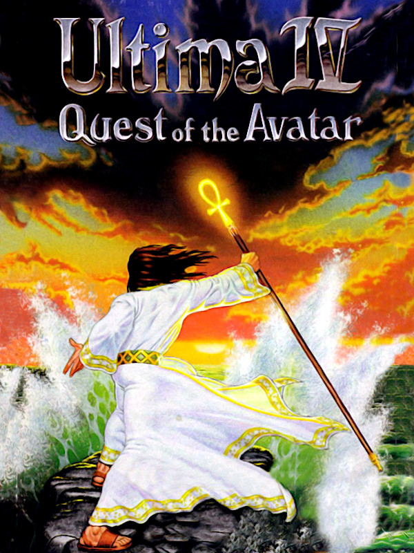

Ultima IV: Quest of the Avatar
Ultima IV: Quest of the Avatar
Detalhes
 |
|
| Tempo de jogo | Não Jogado |
| Última Atividade | Nunca |
| Adicionado | 07/06/2026 0:35:42 |
| Modificado | 07/06/2026 2:34:40 |
| Status de Conclusão | Not Played |
| Biblioteca | Gog |
| Fonte | GOG |
| Plataforma | PC (Windows) |
| Data de Lançamento | 01/11/1985 |
| Pontuação da Comunidade | 88 |
| Avaliação da crítica | |
| Pontuação do Usuário | |
| Gênero | Role-playing (RPG) |
| Desenvolvedor | Origin Systems |
| Editor | Origin Systems |
| Funções | Single Player |
| Links | Wikipedia YouTube Subreddit Twitch Community Wiki GOG |
| Tag | |
Descrição
Following the defeat of the evil triad in the previous three Ultima games, the world of Sosaria changed beyond recognition: continents rose and sank, and new cities were built, heralding the advent of a different civilization. Unified by the reign of the benevolent monarch Lord British, the new world was renamed Britannia. Lord British wished to base people's well-being on the ethical principles of Truth, Love, and Courage, proclaiming the Eight Virtues (Honesty, Compassion, Valor, Justice, Sacrifice, Honor, Spirituality, and Humility) as the ideal everyone should strive for. The person who could accomplish full understanding and realization of these virtues would serve as a spiritual leader and a moral example for the inhabitants of Britannia; he alone would be able to obtain holy artifacts, descend into the Stygian Abyss, and access the Codex of Ultimate Wisdom. This person is the Avatar.
The fourth game in the Ultima series features an improved game engine, with color graphics and enhanced character interaction: the player can have conversations with non-playable characters by typing names of various topics. However, the main difference between Ultima IV and its predecessors in the series (as well as other role-playing games) lies in the game's objectives and the ways to fulfill them.
Instead of building up a character by any means possible in order to face a villain in the end of the game, in Ultima IV the player is trying to become the Avatar, a role model for people. This means upholding the Eight Virtues, basically trying to become a better person. Making morally conscious decisions and helping other people is not done expecting a material reward, but because it is the actual goal of the game and the main focus of its gameplay. The game frowns on behavior typical of most other RPGs, such as backstabbing fleeing enemies or picking up everything that isn't nailed down even if it does not belong to the protagonist. This different approach established the game's reputation as the first "true" Ultima, influencing the design philosophy of later installments and the overall spirit of the series.
Character creation is done by choosing responses to morally ambiguous questions. Each of the Eight Virtues corresponds to a character class; by determining the player's personal priorities in the virtues, the game assigns a class and a starting location for the Avatar. After emerging in Britannia, the player is free to explore it in various ways (on foot, moongate teleportation, on horseback, by ship, etc.). Certain items must be collected in any order to enter the Stygian Abyss and complete the game. The Avatar also has to reach the highest level in all virtues. This is achieved by various means: donating blood increases Sacrifice, not fleeing from combat increases Valor, etc. The process, however, is not irreversible: should the Avatar overpay a blind seller, he gains Compassion points; should he, on the other hand, cheat the seller by underpaying, his level in several virtues would decrease.
These unorthodox features of the game co-exist with plenty of traditional RPG elements, such as dungeons to explore and hostile monsters to kill. Enemies are encountered on the world map as well as in dungeons; combat takes place on separate top-down screens, allowing player-controlled and enemy parties freely move on them. Characters accumulate experience points and level up, gaining higher amount of hit points and access to stronger magic spells. Like in the previous installments of the series, world map, town exploration and combat are presented from a top-down view, while the dungeons are pseudo-3D and are explored from first-person perspective.
Ultima IV also introduces several new gameplay features to the series and role-playing games in general. A number of initially non-playable characters living in various areas of the game world are able to to join the party and fight alongside the hero, replacing traditional player-generated characters or mercenaries and adventurers available only in special locations. Additional new elements include buying and combining reagents in order to cast spells, puzzle rooms in dungeons, and others.
The fourth game in the Ultima series features an improved game engine, with color graphics and enhanced character interaction: the player can have conversations with non-playable characters by typing names of various topics. However, the main difference between Ultima IV and its predecessors in the series (as well as other role-playing games) lies in the game's objectives and the ways to fulfill them.
Instead of building up a character by any means possible in order to face a villain in the end of the game, in Ultima IV the player is trying to become the Avatar, a role model for people. This means upholding the Eight Virtues, basically trying to become a better person. Making morally conscious decisions and helping other people is not done expecting a material reward, but because it is the actual goal of the game and the main focus of its gameplay. The game frowns on behavior typical of most other RPGs, such as backstabbing fleeing enemies or picking up everything that isn't nailed down even if it does not belong to the protagonist. This different approach established the game's reputation as the first "true" Ultima, influencing the design philosophy of later installments and the overall spirit of the series.
Character creation is done by choosing responses to morally ambiguous questions. Each of the Eight Virtues corresponds to a character class; by determining the player's personal priorities in the virtues, the game assigns a class and a starting location for the Avatar. After emerging in Britannia, the player is free to explore it in various ways (on foot, moongate teleportation, on horseback, by ship, etc.). Certain items must be collected in any order to enter the Stygian Abyss and complete the game. The Avatar also has to reach the highest level in all virtues. This is achieved by various means: donating blood increases Sacrifice, not fleeing from combat increases Valor, etc. The process, however, is not irreversible: should the Avatar overpay a blind seller, he gains Compassion points; should he, on the other hand, cheat the seller by underpaying, his level in several virtues would decrease.
These unorthodox features of the game co-exist with plenty of traditional RPG elements, such as dungeons to explore and hostile monsters to kill. Enemies are encountered on the world map as well as in dungeons; combat takes place on separate top-down screens, allowing player-controlled and enemy parties freely move on them. Characters accumulate experience points and level up, gaining higher amount of hit points and access to stronger magic spells. Like in the previous installments of the series, world map, town exploration and combat are presented from a top-down view, while the dungeons are pseudo-3D and are explored from first-person perspective.
Ultima IV also introduces several new gameplay features to the series and role-playing games in general. A number of initially non-playable characters living in various areas of the game world are able to to join the party and fight alongside the hero, replacing traditional player-generated characters or mercenaries and adventurers available only in special locations. Additional new elements include buying and combining reagents in order to cast spells, puzzle rooms in dungeons, and others.